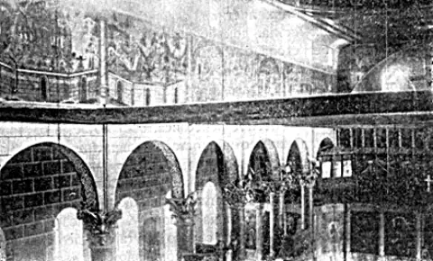
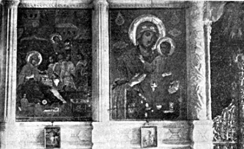

History · 1944
Details of the Church of the Holy Mother of God
13 photographs of the interior of the cathedral Church of the Holy Mother of God. More in Christian churches.

The interior of the Holy Mother of God - the cathedral church. On the left is the pulpit in deep carving, and on the right, by the pillar nearer the altar, is the bishop's throne.

The northern nave of the church with the pulpit and
the royal throne.

The southern nave with the bishop's throne.

The pulpit, carved in artistic woodcarving in 1838, and the stairs beside it.

The bishop's throne in the Church of the Holy Mother of God,
made in 1838.

The royal throne in the church.

The central nave of the Church of the Holy Mother of God with the iconostasis and the bishop's throne.

The upper part of the central nave of the church with a blind dome in the ceiling.

The upper part of the iconostasis (deep carving) was made in 1838 of walnut wood, and the lower part of white marble.

The western side with the women's gallery.


View of the columns and the wall of the central nave of the church (north side).

The right side of the marble iconostasis with the icons of Christ the Saviour and St John the Baptist.


The left side of the marble iconostasis with the icons of the Most Holy Mother of God and of her Nativity.